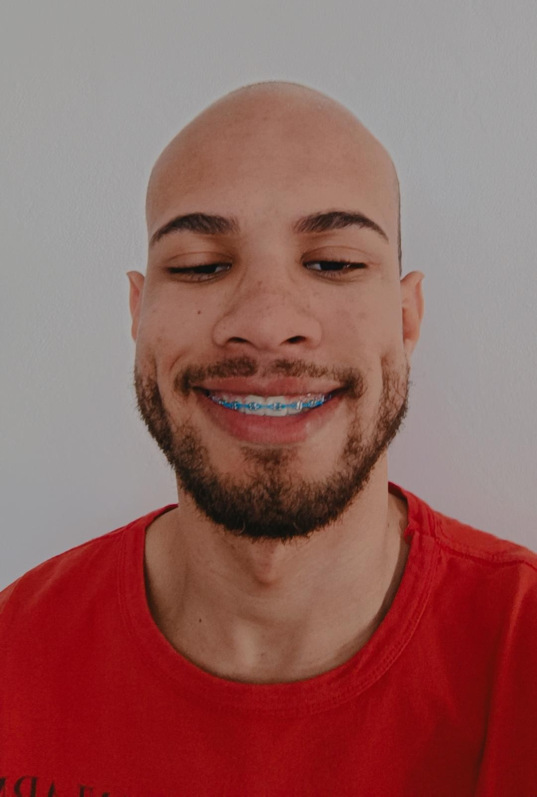

Conheça mais!
sobre mim

Ciência da computação
3º PeríodoHabilidades
Olá! Sou Thallis Matos, um entusiasta da tecnologia e estudante de 22 anos, sempre em busca de oportunidades para expandir meu conhecimento. Desde fevereiro de 2023, quando iniciei minha jornada na faculdade, tenho aproveitado ao máximo para aprimorar minhas habilidades em programação, análise de sistemas e resolução de problemas, complementando meu sólido conhecimento em hardware. Recentemente, comecei a estudar JavaScript e Python para ampliar ainda mais minhas competências técnicas.
Estou à procura de oportunidades de estágio e projetos na área de tecnologia que me permitam continuar crescendo e desenvolvendo minhas habilidades. Meu objetivo é aplicar e expandir o que tenho aprendido, contribuindo de maneira significativa para a equipe e projetos em que me envolver.